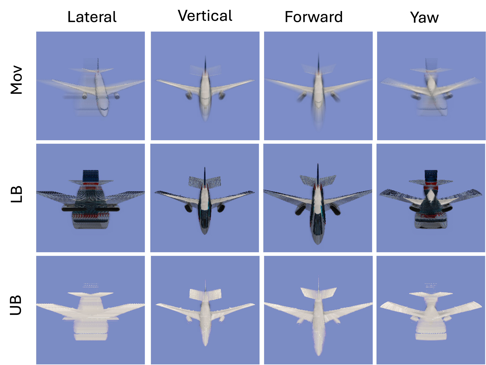

Abstract Rendering: Certified Rendering Under 3D Semantic Uncertainty
NeurIPS 2025 spotlight
Chenxi Ji*, Yangge Li*, Xiangru Zhong*, Huan Zhang, Sayan Mitra
University of Illinois, Urbana-Champaign

Abstract
Rendering produces 2D images from 3D scene representations, yet how continuous variations in camera pose and scenes influence these images—and, consequently, downstream visual models—remains underexplored. We introduce Abstract Rendering, a framework that computes provable bounds on all images rendered under continuously varying camera poses and scenes. The resulting abstract image, expressed as a set of constraints over the image matrix, enables rigorous uncertainty propagation through downstream neural networks and thereby supports certification of model behavior under realistic 3D semantic perturbations, far beyond traditional pixel-level noise models.
Our approach propagates camera pose uncertainty through each rendering step using efficient piecewise linear bounds, including custom abstractions for three rendering-specific operations—matrix inversion, sorting-based aggregation, and cumulative product summation—not supported by standard tools. Our implementation, ABSTRACTRENDER, targets two state-of-the-art photorealistic scene representations—3D Gaussian Splats and Neural Radiance Fields (NeRF)—and scales to complex scenes with up to 1M Gaussians.
Our computed abstract images achieve up to 3% over-approximation error compared to sampling results (baseline). Through experiments on classification (ResNet), object detection (YOLO), and pose estimation (GATENet) tasks, we demonstrate that abstract rendering enables formal certification of downstream models under realistic 3D variations—an essential step toward safety-critical vision systems.
SlideVideo
Abstract Images
Lower bound and upper bound images are supposed to contain all images that can be rendered from given range of camera (scene) movement, like reference images.

Downstream NN Verification
Verified range of camera movement for which the downstream NN (ResNet classifer or GateNet pose estimator) is certified to work (color in green), and identify the ranges where it may fail (color in red).


BibTeX
@inproceedings{jiabstract,
title={Abstract Rendering: Certified Rendering Under 3D Semantic Uncertainty},
author={Ji, Chenxi and Li, Yangge and Zhong, Xiangru and Zhang, Huan and Mitra, Sayan},
booktitle={The Thirty-ninth Annual Conference on Neural Information Processing Systems}
}
Acknowledgments and Funding
Chenxi Ji, Yangge Li, and Sayan Mitra are supported by a research grant from The Boeing Company and NSF (FMITF-2525287). Huan Zhang and Xiangru Zhong are supported in part by the AI2050 program at Schmidt Sciences (AI2050 Early Career Fellowship) and NSF (IIS SLES-2331967, CCF FMITF-2525287).
Reference
[1] Bernhard Kerbl, Georgios Kopanas, Thomas Leimkühler, and George Drettakis. 3d gaussian splatting for real-time radiance field rendering. ACM Trans. Graph., 42(4):139–1, 2023.
[2] Ben Mildenhall, Pratul P Srinivasan, Matthew Tancik, Jonathan T Barron, Ravi Ramamoorthi, and Ren Ng. Nerf: Representing scenes as neural radiance fields for view synthesis. Communications of the ACM, 65(1):99–106, 2021.
[3] Huan Zhang, Tsui-Wei Weng, Pin-Yu Chen, Cho-Jui Hsieh, and Luca Daniel. Efficient neural network robustness certification with general activation functions. Advances in neural information processing systems, 31, 2018.